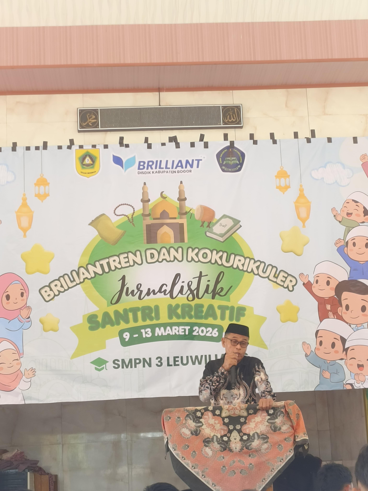
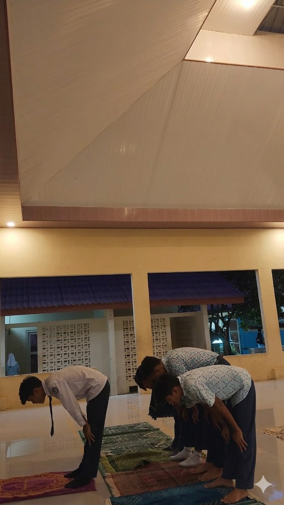
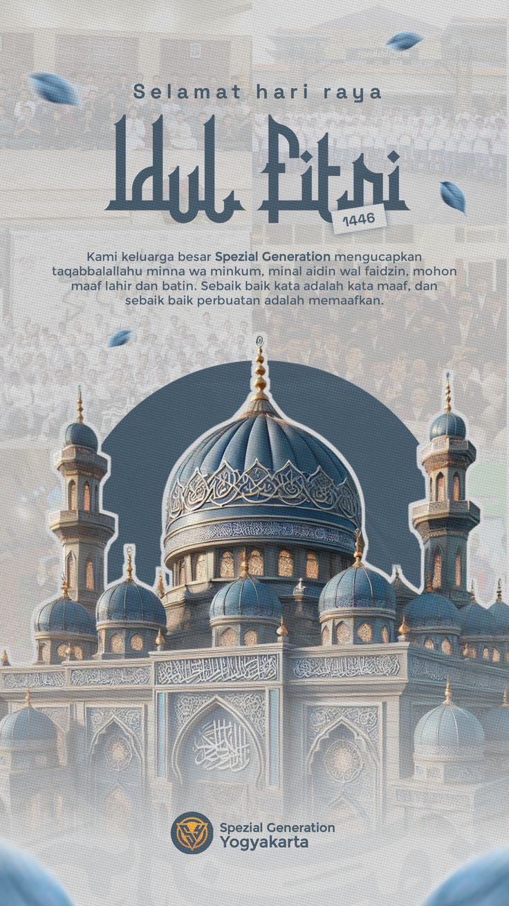
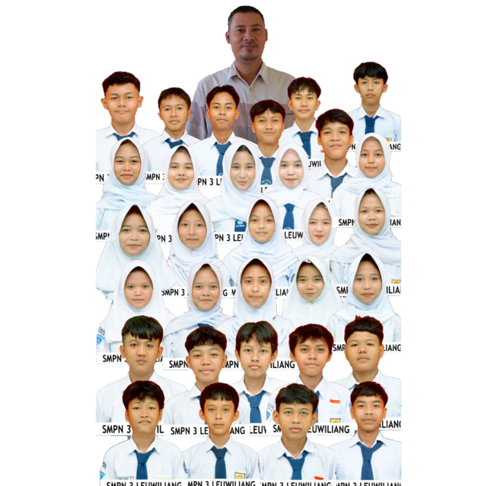
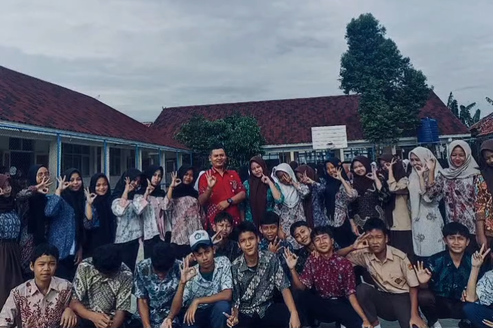
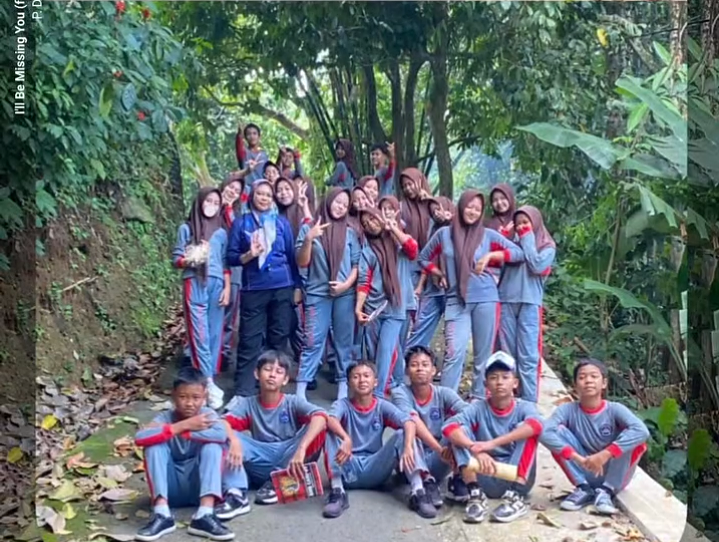
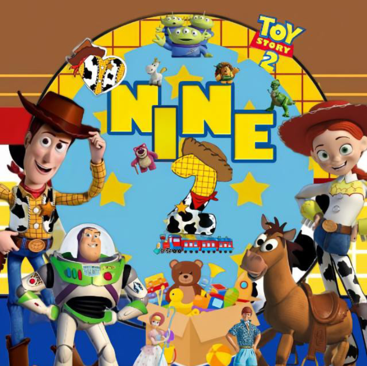

Makna, Hikmah, & Keutamaan Bulan Suci
Dokumentasi & Penjelasan

Dolumentasi
Santri Kreatif
Secara bahasa berarti suci dan berkah. Secara syariat, zakat adalah mengeluarkan harta tertentu untuk mensucikan jiwa dan membantu mereka yang membutuhkan.
Zakat Fitrah
Dikeluarkan saat Ramadhan (2,5 kg beras) untuk setiap jiwa Muslim.
Zakat Maal
Zakat atas harta yang telah mencapai nishab dan haul.
Haram & Dosa Besar
Membatalkan puasa dengan sengaja tanpa uzur syar'i (seperti sakit/perjalanan) adalah dosa besar. Pelakunya wajib bertaubat dan mengganti (Qadha) puasanya di hari lain.
Rukun: Niat di malam hari dan menahan diri dari segala pembatal.
Syarat: Islam, Baligh (Dewasa), Berakal Sehat, Suci dari Haid/Nifas, dan Mampu secara fisik.
Puasa Wajib: Ramadhan, Puasa Nadzar, Puasa Kifarat.
Puasa Sunnah: Senin-Kamis, Puasa Daud, Puasa Arafah, Puasa 6 hari di bulan Syawal.
"Melatih kesabaran, menumbuhkan empati sosial terhadap penderitaan sesama, serta menjaga kesehatan sistem pencernaan secara alami."
"Wahai orang-orang yang beriman! Diwajibkan atas kamu berpuasa sebagaimana diwajibkan atas orang sebelum kamu agar kamu bertaqwa."
— QS. AL-BAQARAH: 183 —
Qiyamul Lail di Bulan Ramadhan

اُصَلِّى سُنَّةَ التَّرَاوِيْحِ رَكْعَتَيْنِ مُسْتَقْبِلَ الْقِبْلَةِ مَأْمُوْمًا ِللهِ تَعَالَى
"Ushalli sunnatat-taraawiihi rak'ataini mustaqbilal qiblati ma'muuman lillaahi Ta'aalaa."
Artinya: "Aku niat sholat sunnah Tarawih dua rakaat dengan menghadap kiblat sebagai makmum karena Allah Ta'ala."
"Barangsiapa melakukan qiyam Ramadhan (Tarawih) karena iman dan mencari pahala, maka dosa-dosanya yang telah lalu akan diampuni." (HR. Bukhari & Muslim)
Sholat Tarawih adalah sholat sunnah muakkadah yang dilakukan khusus di malam bulan Ramadhan setelah Sholat Isya. Tarawih berarti "istirahat", karena dulu dilakukan dengan banyak jeda istirahat.
"Barangsiapa melakukan qiyam Ramadhan (Tarawih) karena iman dan mencari pahala, maka dosa-dosanya yang telah lalu akan diampuni." (HR. Bukhari & Muslim)
Kemenangan Setelah Perjuangan

اُصَلِّى سُنَّةً لِعِيْدِ الْفِطْرِ رَكْعَتَيْنِ مُسْتَقْبِلَ الْقِبْلَةِ مَأْمُوْمًا للهِ تَعَالَى
"Ushalli sunnatan li'idil fithri rak'ataini mustaqbilal qiblati ma'muuman lillaahi ta'aala."
Artinya: "Aku niat shalat sunnah Idul Fitri dua rakaat menghadap kiblat sebagai makmum karena Allah Ta'ala."
Kembali kepada kesucian seperti bayi yang baru lahir, setelah sebulan penuh mensucikan jiwa.
Momen saling memaafkan dan mempererat tali persaudaraan antar sesama manusia.
Mandi sebelum sholat Ied, memakai pakaian terbaik, dan makan sebelum berangkat sholat Idul Fitri.
Semoga Allah menerima amalan kami dan amalanmu.
Proses pembersihan sel-sel rusak yang dipicu oleh puasa, membantu mencegah penyakit berat seperti kanker dan diabetes.
Puasa meningkatkan protein otak yang mendukung pertumbuhan sel saraf baru, meningkatkan kecerdasan dan daya ingat.
Bersama Mewujudkan Projek P5

SMP NEGERI 3 LEUWILIANG
"Kesuksesan projek ini adalah bukti nyata solidaritas kami. IX-2 bukan hanya sebuah kelas, tapi sebuah keluarga yang saling mendukung untuk menjadi Pelajar Pancasila.Dan kami sama sekali tidak menggunakan Canva, kami membuat nya berbasis website agar kelas kami terlihat berbeda dari yang lain, website ini di bangun menggunakan coding dan full manual, pembuat utama website nya adalah fikri tapi kontribusi terbesar lainnya adalah agis yang membantu saya agar ide terus mengalir, dan seperti nya saya pede dengan project saya karna akan menjadi satu satunya kelas yang menggunakan coding."
Album 9-2


